Your guide to 1st Golf GPS
Every feature, from opening the app to the 18th green, step by step.
Quick start: open the app → Start a round → pick your course → choose your tees → walk to the first tee. The yardages update as you walk, and the app moves to the next hole for you.
Steps marked Premium are part of the planned Premium plan. Still stuck? See Support.
1Getting started
Your rounds stay on your iPhone: there are no accounts and no adverts. The first time you open the app, a short tour runs, then the app asks to use your location. Choose Allow While Using App, because distances need it.
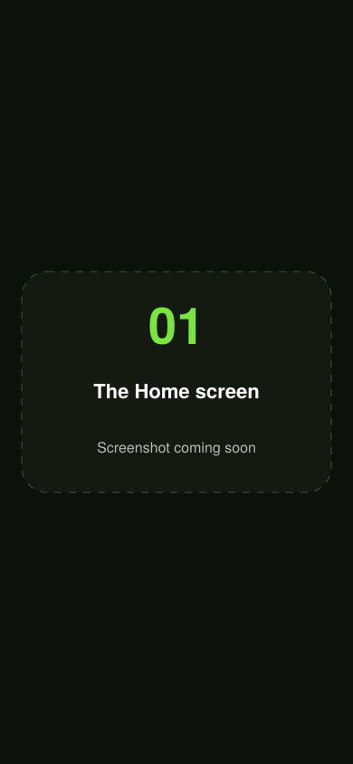
The Home screen
This is the first thing you see. Along the top are your rounds, average and best score, with your handicap index once you have one. Below them are Start a round, Add a past round, the nearest course with today's weather and sunset time, and your favourite courses.
A black bar along the bottom has four tabs: Home, Play, Rounds and Settings.
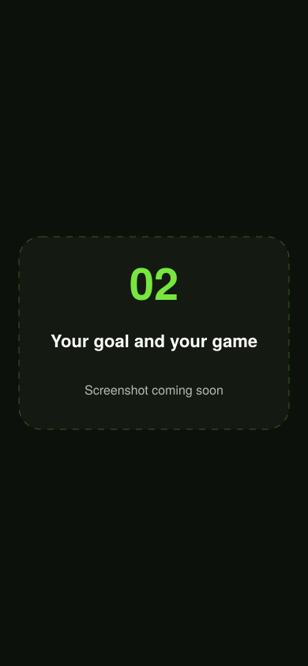
Your goal and your game
Scroll down for your goal, which starts as “Break 90” (tap Change to pick another), your handicap trend, and your game: putts, fairways hit, greens in regulation and your birdie, par and bogey split.
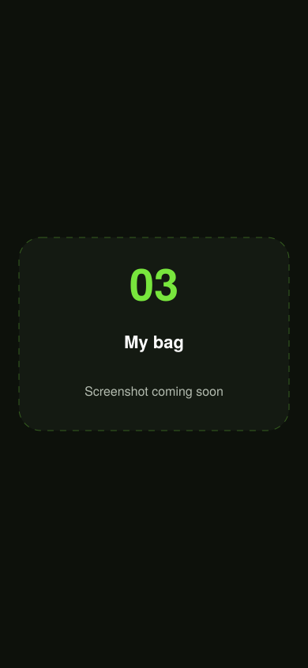
My bag
Tap My bag to tick the clubs you carry and set how far you hit each one. Club suggestions use these distances until you've tracked 3 or more real shots with a club.
2Finding a course
The Play tab lists every golf course in the UK. The full list is built into the app, so there's no long download first.
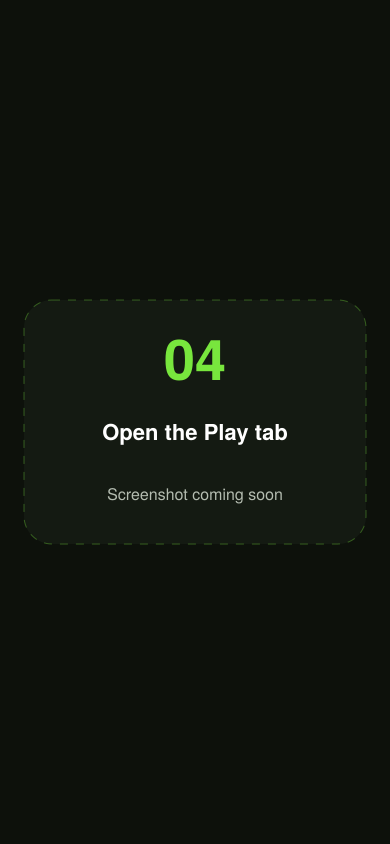
Open the Play tab
Tap Play in the bar along the bottom.
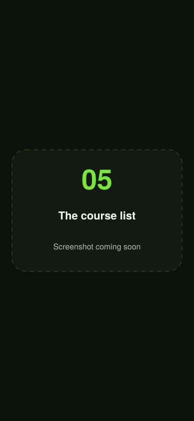
The course list
The course closest to you is at the top, then your recent courses and favourites, then every course sorted by distance. Pull down on the list to refresh it.
To make a course a favourite, swipe it to the right and tap the star. Favourites show on the Home screen.
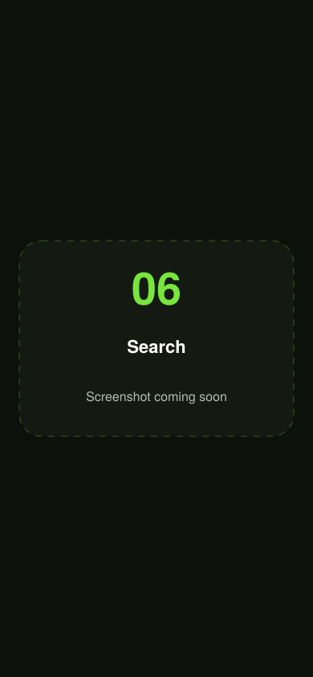
Search
Tap the search box and type a course name or town.
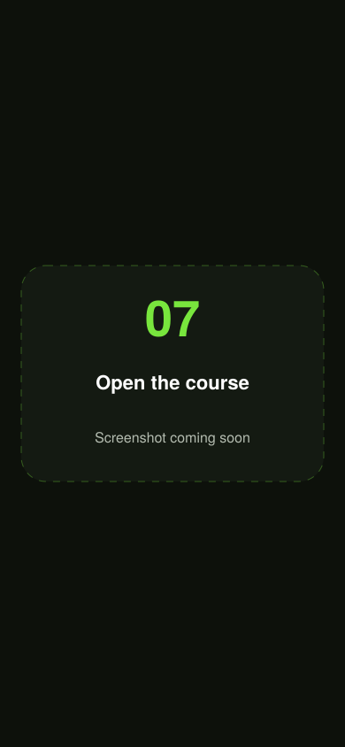
Open the course
Tap a course to open its map. The first time you open a course it downloads the hole layouts; after that they're saved on your phone.
Hole layouts come from OpenStreetMap, which volunteers draw. If a hole is missing a green, bunker or tee, you can fix it yourself (see section 7).
3Starting a round
Choose your tees and how many holes you're playing, then walk to the first tee.
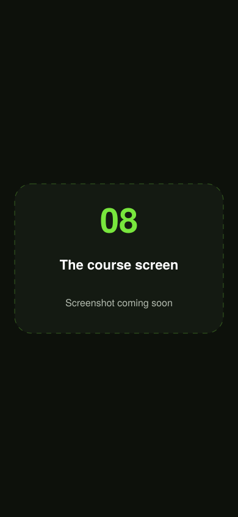
The course screen
Each hole is a satellite map lined up to play up the screen, from tee to green, with a see-through yardage panel at the bottom. Pinch to zoom and drag to move around. Layup arcs show 100, 150, 200 and 250 to the green.
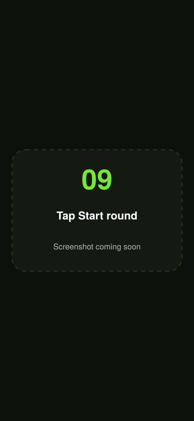
Tap Start round
Tap the green Start round button at the bottom of the yardage panel.
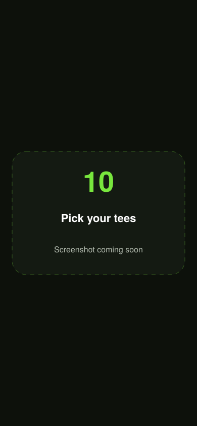
Pick your tees
Choose 18 holes, Front 9 or Back 9, then tap your tees. The buttons are in the real tee colours and show the course length from each tee. Hole lengths, pars and stroke indexes change to match, on every hole.
A ≈ sign means a length is estimated, because the map doesn't have that tee's yardage. The app also looks up the official scorecard (pars, stroke index, course rating and slope) and fills in what it finds.
4On the course
Your distances update as you walk, and the app moves to the next hole when you reach its tee.
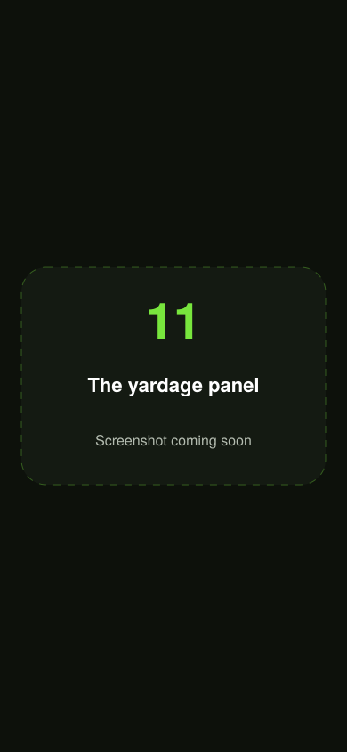
The yardage panel
Front, Centre and Back are your distances to the green. Under them are the plays-like distance (adjusted for wind and slope), the club from your bag that fits the shot, the wind relative to your shot with gusts and temperature, and the hazards ahead: left, in line or right, with the distance to reach and to carry them. Use ‹ › to change hole.
Plays-like distances, wind and club suggestions are Premium.
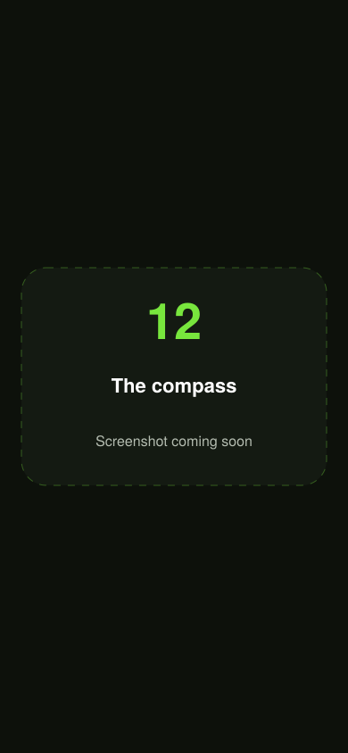
The compass
The compass in the top-right corner shows N, E, S and W, with N in red. The green arrow points the way the hole plays, and the label under it says which way that is, such as “Plays NE”. Use it with the wind to judge whether the hole plays into the wind or downwind.
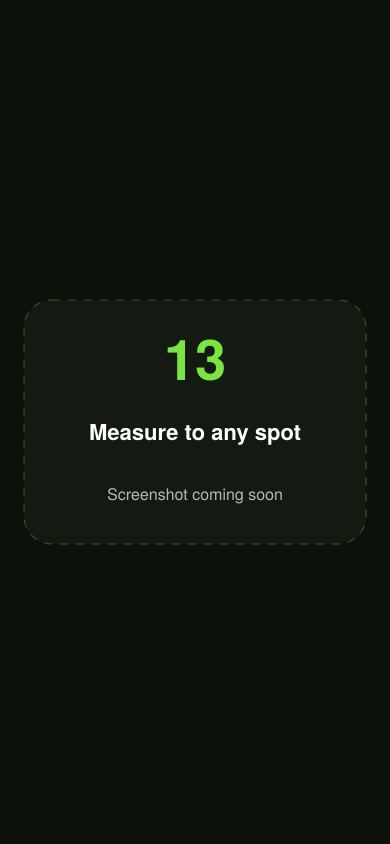
Measure to any spot
Tap anywhere on the map to set a target, such as a layup spot or the corner of a dogleg.
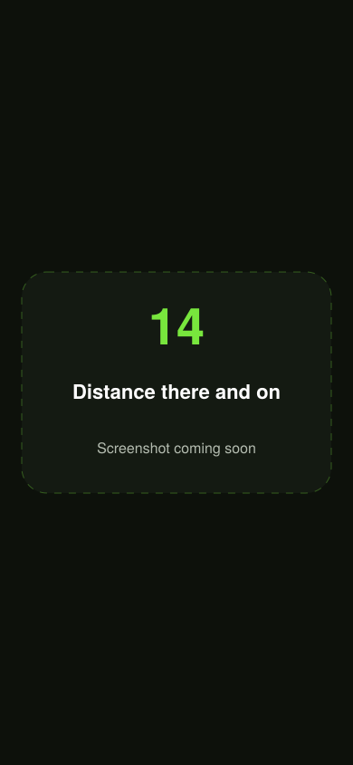
Distance there and on
You'll see the distance from you to the target, and from the target to the green. Tap the ✕ to clear it.
Zoom to the green Premium
Tap the green button at the top to zoom right in on the green. Tap it again to see the whole hole.
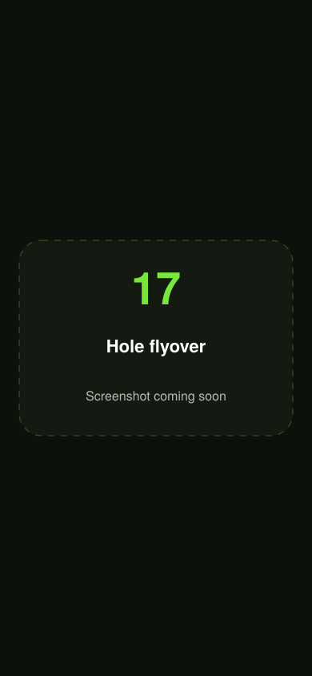
Hole flyover Premium
Tap the plane button to glide from the tee down the hole, pausing on the green.
5Scoring your round
Quick scoring from the yardage panel, with the full card a tap away.
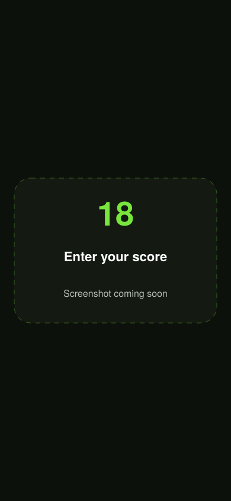
Enter your score
When you finish a hole, use – and + next to Score.
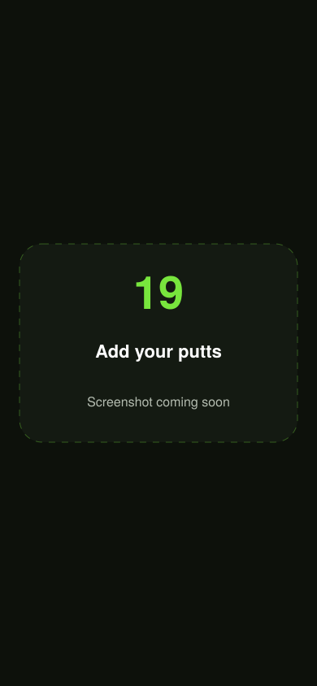
Add your putts
Do the same for Putts. Scores save as soon as you tap.
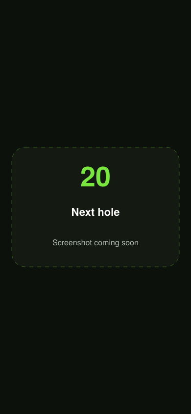
Next hole
Tap the green Next button to move to the next tee. On the last hole it becomes Scorecard, which opens your full card.
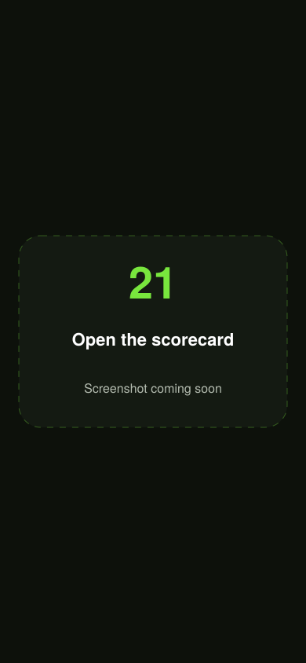
Open the scorecard
Tap the scorecard button at the top of the course screen any time during a round.
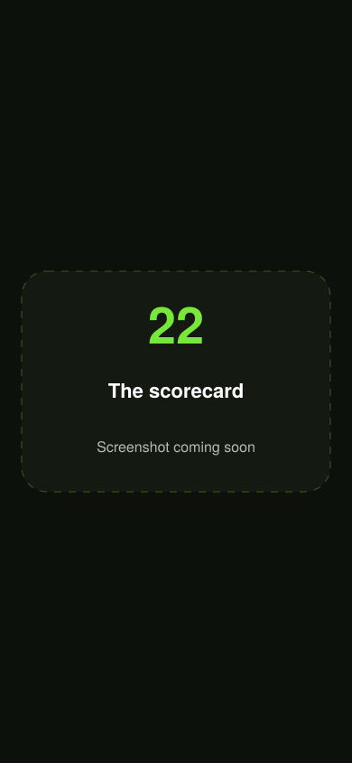
The scorecard
Each hole has strokes, putts, fairway (left, hit or right) and penalties, with your running total, score to par and Stableford points using your playing handicap and the stroke index. Enter the course rating and slope for your tees (they're on the club's card) and they're remembered for next time.
Stableford points are Premium.
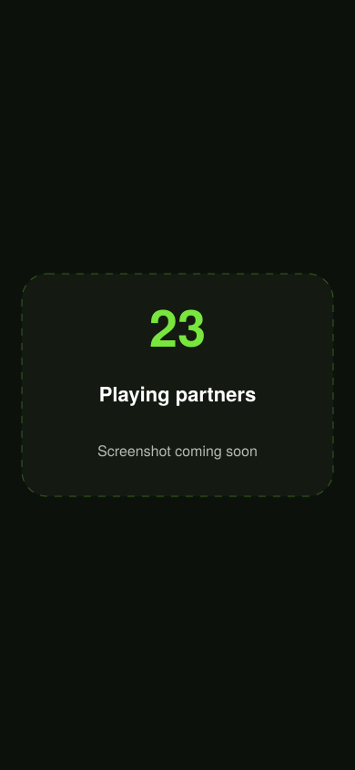
Playing partners
Tap Add playing partner and enter their name and handicap. You can add up to 3, score them hole by hole from the yardage panel, and the scorecard shows a leaderboard.
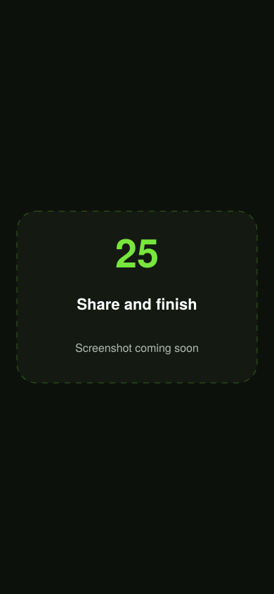
Share and finish
Tap Share to send an image of your scorecard by message, WhatsApp or social media. When you're done, tap Finish round. It then appears in the Rounds tab and counts towards your stats.
6Tracking shots
Learn how far you really hit each club, so club suggestions get more accurate.
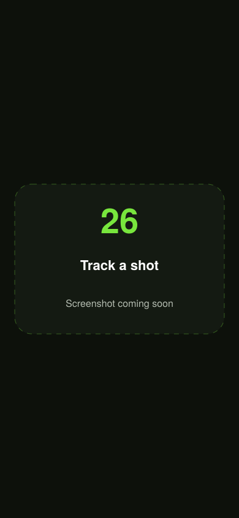
Track a shot Premium
Stand by your ball and tap Track shot.
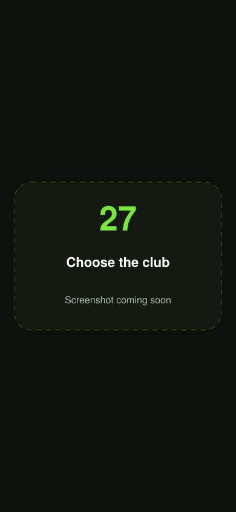
Choose the club Premium
Pick the club you're hitting from your bag.
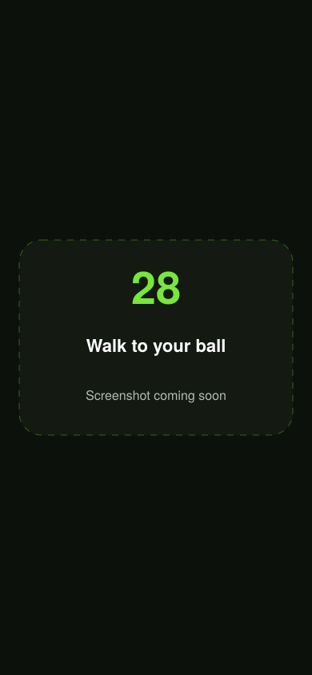
Walk to your ball Premium
Hit, then walk to your ball. The distance counts up as you walk. At the ball, tap the green tick to save the shot, or ✕ to cancel.
Once a club has 3 or more tracked shots, your real average replaces the distance you set in your bag.
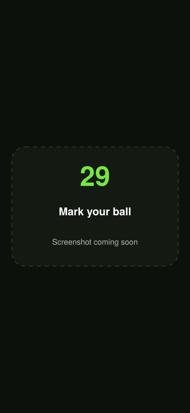
Mark your ball Premium
Tap Mark to drop a pin where your ball is. Each mark is saved with the hole, building a picture of how you played it. Tap undo to remove the last one.
8Lock Screen yardages
Check a distance without unlocking your phone.
Yardages on the Lock Screen Premium
While a round is running, front, centre and back for the current hole show on the Lock Screen and in the Dynamic Island. To keep them updating while the phone is locked, turn on Settings → Update yardages while locked and allow location access “Always”.
iPhone shows its location arrow while this is on, so turn it off in Settings when you don't need it. For a full round, start with a good charge, and think about using Battery saver.
9Adding a past round
Forgot to use the app, or kept a paper card? Add the round afterwards. No GPS needed.
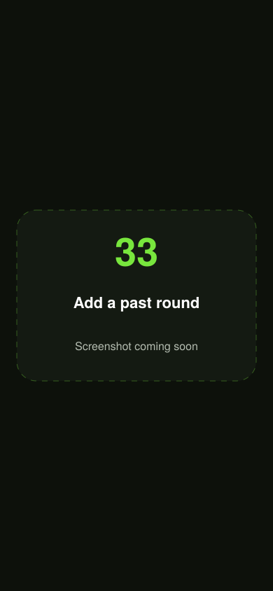
Add a past round
On the Home screen tap Add a past round, or tap + at the top of the Rounds tab.
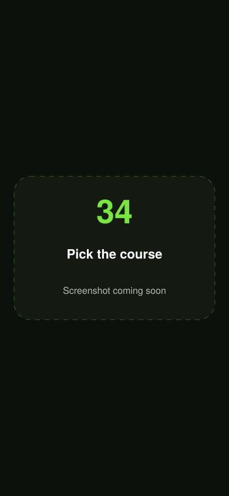
Pick the course
Recent courses come first, then nearby ones, or search for it.
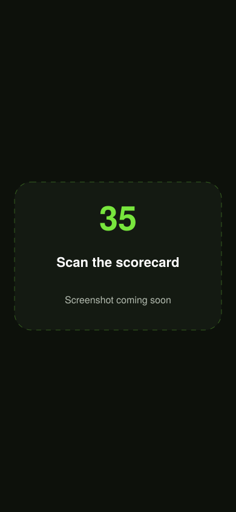
Scan the scorecard
Set the date, tees and 18, Front 9 or Back 9. Then tap Scan scorecard with camera, or Use a photo of the scorecard. The numbers are read on your phone. Tap Use as my scores on your row (and Use as pars on the par row if needed).
Lay the card flat in good light and fill the frame. Printed numbers read well; handwriting is hit and miss.
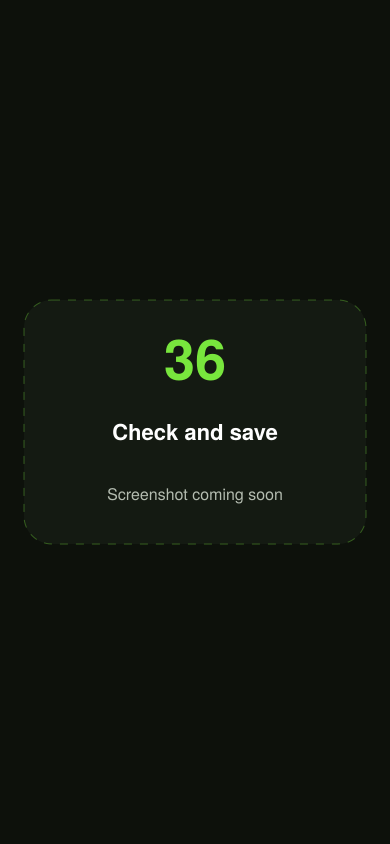
Check and save
Or type the scores in with – and +. Birdies show green, bogeys orange and worse in red. Check every hole, fix anything misread, then tap Save round.
10Rounds, stats and handicap
Every round you've played, and how your game is changing.
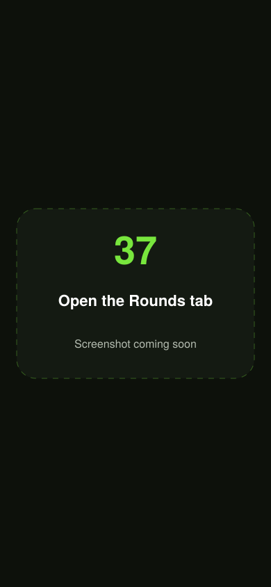
Open the Rounds tab
Tap Rounds in the bar along the bottom. Your handicap index is at the top.
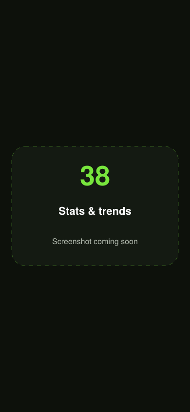
Stats & trends Premium
Tap Stats & trends for charts of your game.
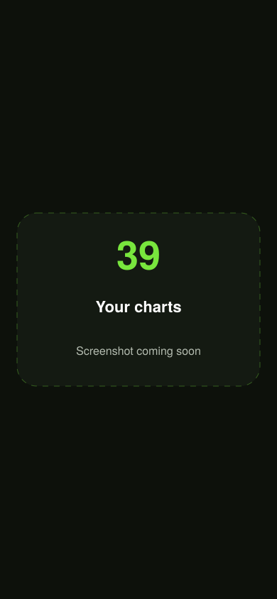
Your charts Premium
See your handicap index, scores and putts over time.
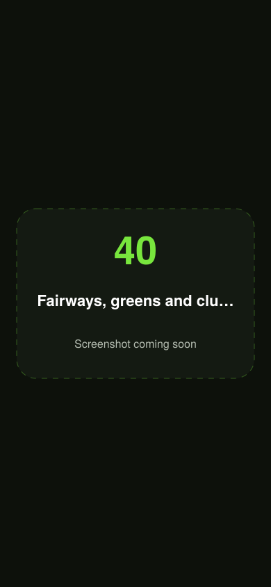
Fairways, greens and clubs Premium
Scroll down for fairways and greens hit, and your average distance with each club.
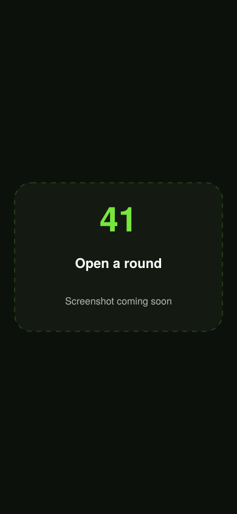
Open a round
Every round is listed, newest first. Tap one to open its scorecard. Swipe left on a round to delete it.
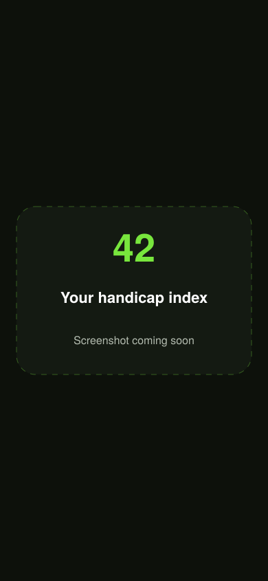
Your handicap index
Enter the course rating and slope on a round's scorecard and it gets a score differential (each hole counts at most net double bogey). After 3 rated 18-hole rounds you get a handicap index, using the best differentials from your last 20 rounds, the World Handicap System way. 9-hole rounds count too once you have an index.
It's a guide for your own use. Your official handicap is still the one held by your club.
11Settings and backup
Make the app work the way you like, and keep your rounds safe.
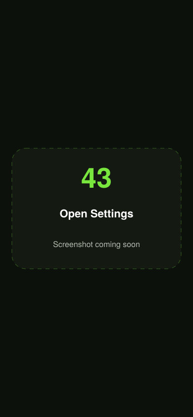
Open Settings
Tap Settings in the bar along the bottom.
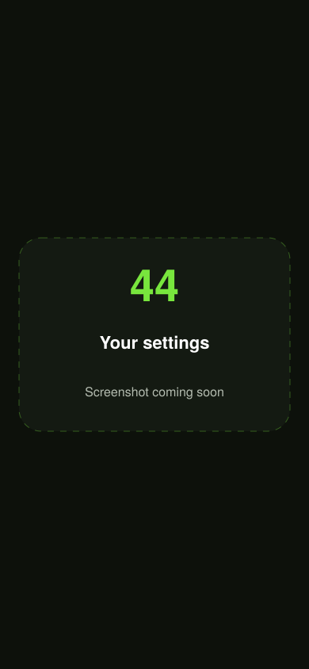
Your settings
Choose Appearance (Match iPhone, Light or Dark), yards or metres, your playing handicap, Auto-advance to next tee, 3D terrain, Battery saver, how see-through the yardage panel is, layup arcs and plays-like distances.
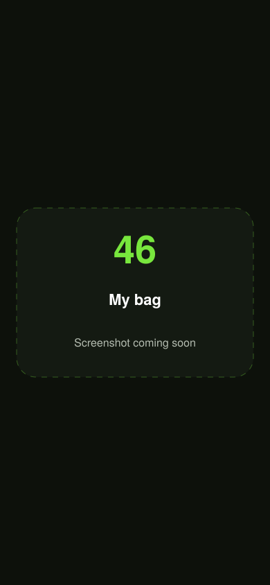
My bag
Tick the clubs you carry and set your usual distance with each one.
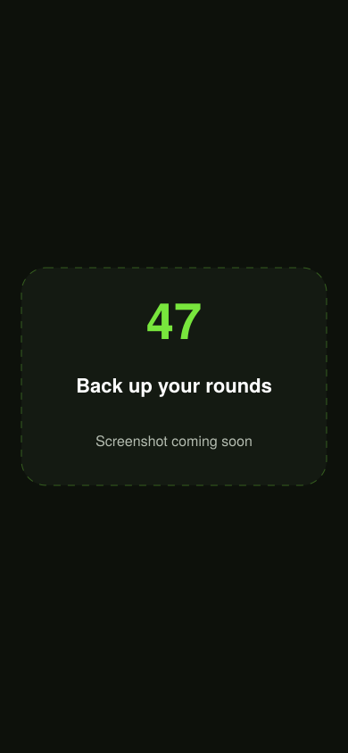
Back up your rounds
Tap Export backup to save your rounds, handicap history, shots, bag, notes, hole fixes and favourites to one file. Keep it in iCloud Drive or Files. Do this every so often, and before deleting the app or changing phones. Restore from backup loads it back.
Your rounds are stored only on your iPhone, so deleting the app deletes them unless you've made a backup.
12Tips & troubleshooting
Quick fixes for common questions.
Distances look wrong or jumpy
Wait a few seconds in the open for GPS to settle, and check location access is on for the app.
The app is on the wrong hole
Tap ⋯ → Go to the hole I'm on, or use ‹ › in the panel.
A green, tee or bunker is in the wrong place
Tap ⋯ → Fix this hole and move or add it. Your fix is saved for next time.
Front and back show ≈
The green's outline isn't mapped. Use Fix this hole → Draw the green (front & back).
Pars or stroke index are wrong
Try ⋯ → Find scorecard…, or change the pars on the scorecard.
“No scorecard found”
The course may not be in the scorecard database yet. Search by another name with Find scorecard…, or set the pars yourself.
Lock Screen yardages stop updating
Turn on Update yardages while locked in Settings and set location access to “Always”.
The battery drains quickly
Turn on Battery saver in Settings and lower your screen brightness.
I'm changing phones
Export a backup in Settings, save it to iCloud Drive, then restore it on the new phone.
A scan misread a number
Tap – or + on that hole to correct it before saving.